About
Effective Altruist
on sabbatical.
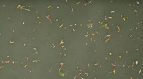
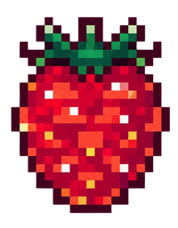

My current obsession is stand‑up comedy which I perform in London and write about on Substack.
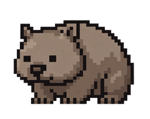
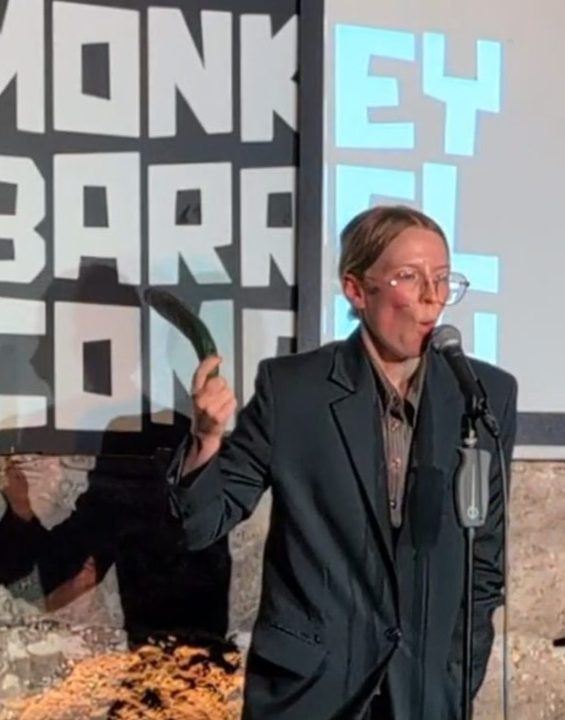
?I've been described as a book‑cel and spreadsheet rotator. I've also been described as German. Probably because I'm German.
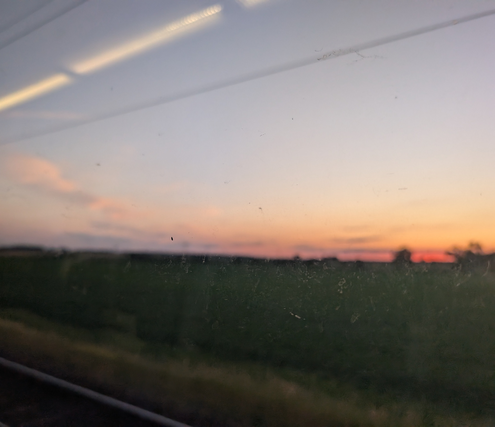
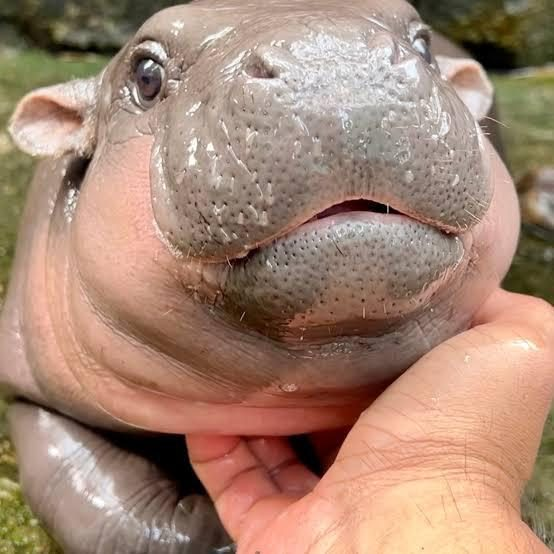
?Before taking a break due to my illness, I worked at the Institute for AI Policy and Strategy, before that at GovAI, and before that in various AI safety and EA community building orgs.
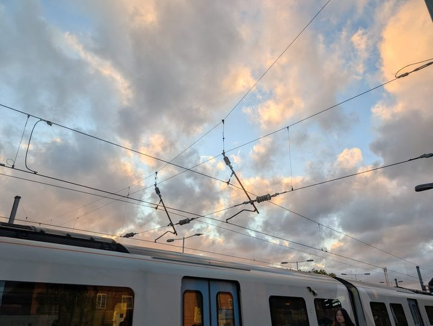
Before that, I did an undergrad in Computer Science. Before that, I grew up on a farm.
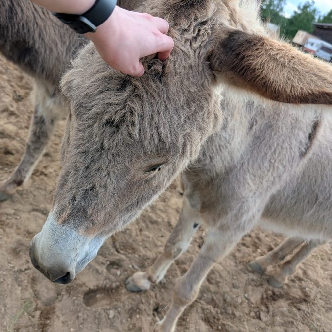
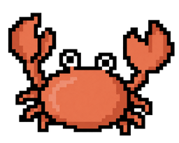
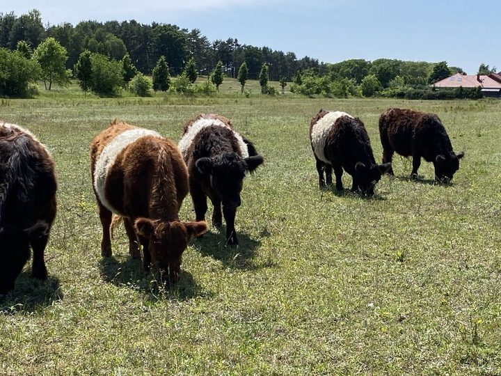
?Unsorted list of things I love:
- clear thinking and writing
- new experiences
- Tolkien and Dune
- optimizing everything
- ecstatic dance
- classics and literary fiction
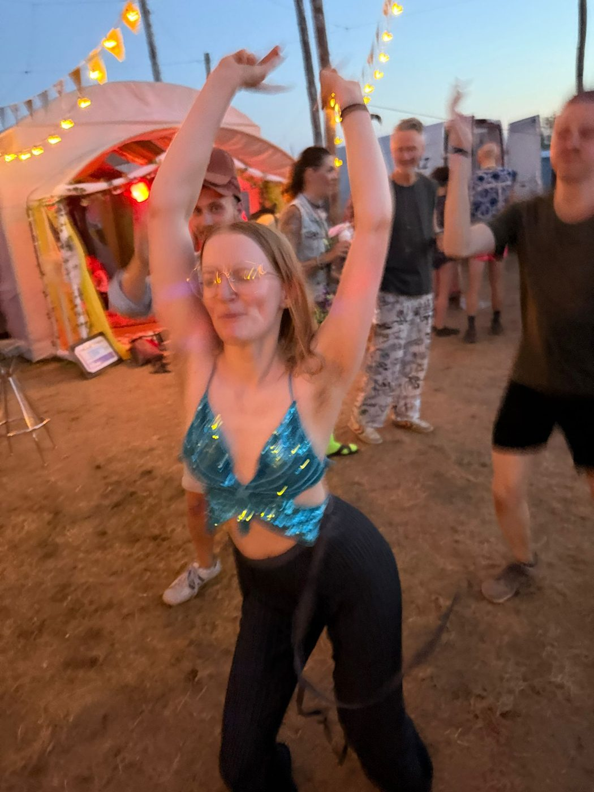
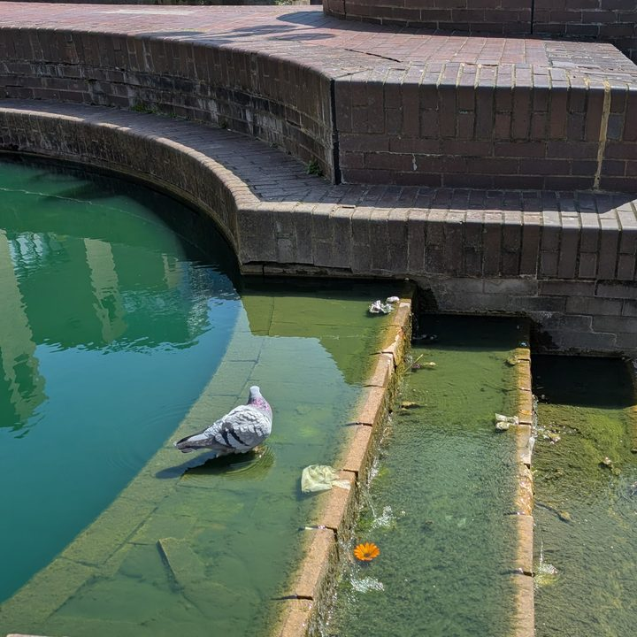